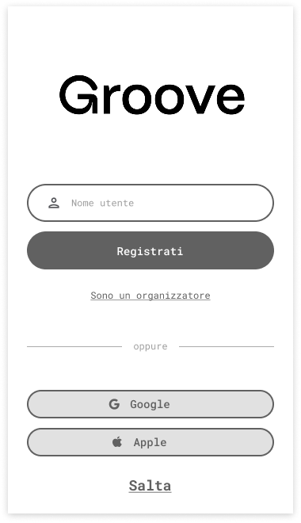
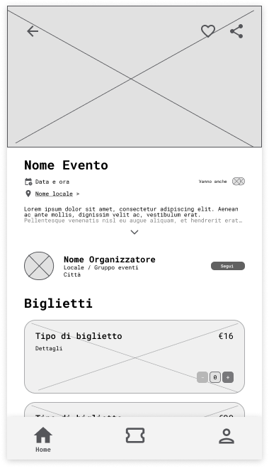
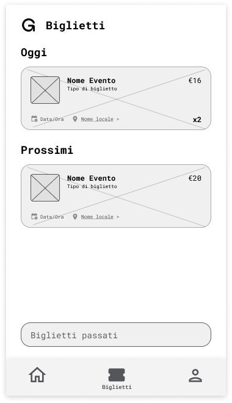
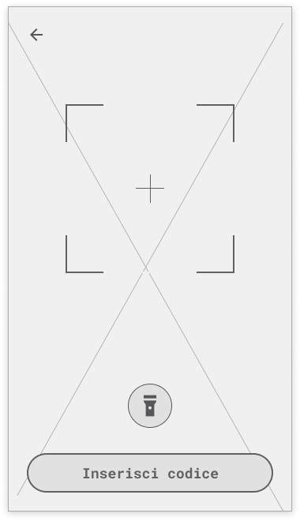
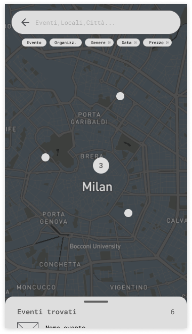
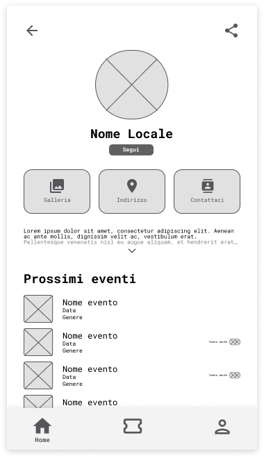
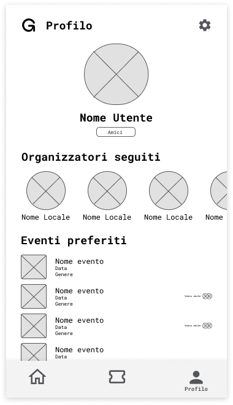

01Groove
An AI nightlife-discovery MVP — from concept to a €100K conditional offer.
Wireframes · Lo-Fi










Overview
I co-founded Groove and led a 9-person cross-functional team (engineering, design, marketing) to turn a messy everyday problem — young people wasting 30+ minutes and money deciding where to go out — into a shipped MVP, positioned as a discovery platform verticalized on venues.
Process
- Synthesized 500+ survey responses (72% felt the pain) into personas and a prioritized roadmap.
- Used competitive analysis to sharpen the positioning against generic event apps.
- Validated the core fix with a Wizard-of-Oz test (15 users) — manually curating recommendations ahead of the AI engine.
Impact
- Cut event-discovery time from ~30 minutes to ~5 (−80%).
- Shipped an MVP pitched to investors.
- Secured a €100K conditional funding offer from private angel investors, introduced by a university professor.